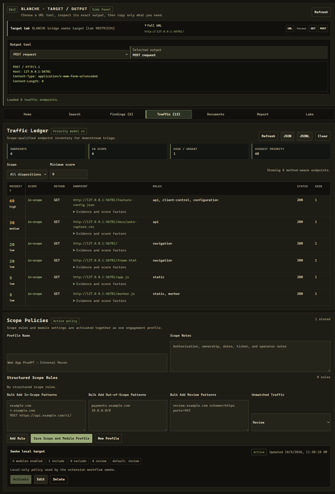

Search Workbench
Multi-engine OSINT search launcher with three built-in profiles for public footprint, document exposure, and infrastructure or certificate discovery.
Browser-side visibility and operator-driven OSINT collection for Burp workflows. BLANCHE captures client-only state, turns it into Burp-readable notes, and keeps search, documents, and seed handoff in one focused console.

Multi-engine OSINT search launcher with three built-in profiles for public footprint, document exposure, and infrastructure or certificate discovery.
Tracks document links and browsed document responses, downloads allowed files, hashes content, extracts URLs, and highlights keywords like token, credential, internal, and admin.
Collects Chromium-only page state including storage, IndexedDB, cache, workers, service workers, blob URLs, data URLs, and frame metadata, then posts the export to Burp.